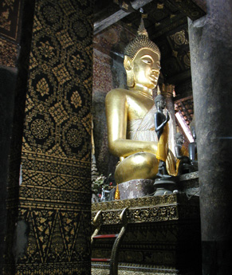

Laos Trav-E-Logs©
| Luang Prabang | |
| back: Vientiane | A butterfly welcome to Luang Prabang |
================================= Took the night bus to Luang Prabang, skipping the popular backpacker destination of Van Viang, as it has little historical interest. People were sitting on the bus hours before departure time, but unfortunately I kept on being moved toward the back of the bus. Ended up with isle seat, across from nearly 1000 chicks. Moonlight-lit scenery made me wish this bus were traveling in the daytime. =================================
Jun 16 - 18, 2003
These chicks travel in luxury . . . each stack having a seat to themselves, peeping away most of the night. However, the more unusual event was when the bus driver pulled over to the side of the road. A young gentlemen at the back of the bus, in military fatigues, stands up, retrieves his AK47 from his gear, walks to the front of the bus, and spends the next several hours next to the driver with weapon at "present arms". The reason for this display is shown in the photo to the far right -- courtesy of a fellow traveler who had made the trip during daylight. Newspapers and guidebooks say these attacks are the work of Hmong rebels fighting the communist regime. The Bangkok Post reported "tens of thousands of Hmong hilltribespeople were recruited by the United States to fight in Laos against North Vietnamese troops and Pathet Lao rebels during the Vietnam War." The U.S subsequently abandoned them.
Luang Prabang is the ancient capital of Laos, and retains the status of religious and cultural center even today. Spent the better part of three days walking around the somewhat compact town to visit the more historically significant places. Many photo opportunities but note the similarities between the main temple halls shown on this page.
It's hard to believe Laos is considered a very poor country when one observes the richness in material usage and design on the sides of the buildings in a temple complex, as shown on the right. A temple complex consists of various structures, such as the main hall, preaching hall, a pavilion, monk's dormitory, one or more stupas, and various chambers to house additional Buddhas and significant religious items.
| |
The three photos above were all taken at the royal palace, which includes a theater (not shown), museum (left), and temple (center and right).
The following photos were all taken in the temple complex known as Wat Xieng Thong. Of special interest is the tree of life.
|  |
Mapped out my last five days in Laos. I'll take buses north to Luang Nam Tha tomorrow.
Bill
------------------------------
"Travel is Fatal to Bigotry, Prejudice, and Narrow-minded ness" .... attributed to Mark Twain
| next: Luang Nam Tha |
| back: Vientiane |